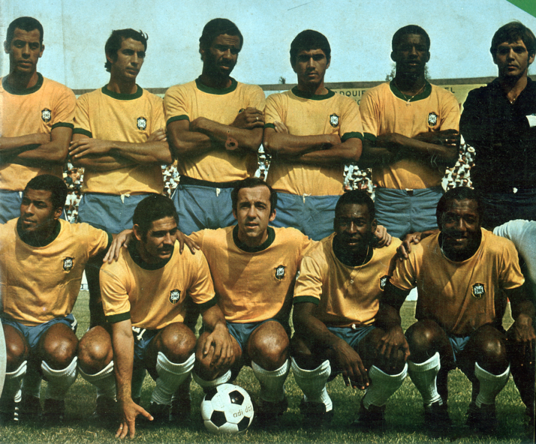

Rumo ao Hexa
Este site foi desenvolvido para relatar e mostrar a trajetória da selecão brasileira em copas do mundo.
Copa 1958
O primeiro título do Brasil foi em 1958, na Suécia. Ali, aos 17 anos de idade, Pelé já se desenhava como um grande nome do futebol internacional. Com o melhor jogador de todos os tempos acompanhado de Vavá, Garrincha e Zagallo, a seleção venceu o país sede por 5 a 2 e abriu o caminho para uma sequência excelente, com três finais de Copa do Mundo em quatro edições.
Copa 1962
Em 1962, a seleção conseguiu o bicampeonato mundial, dessa vez com maior destaque para Vavá e Garrincha, já que Pelé se machucou no segundo jogo da competição, que foi disputada no Chile. Na final contra a Tchecoslováquia, o Brasil conquistou o título pelo placar de 3 a 1.

Copa 1970
70. Essa campanha foi a única em que uma seleção ganhou todos os jogos das Eliminatórias e da Copa do Mundo. O Brasil pegou a Itália na final e venceu por 4 a 1, no México.
Copa 1994
A seleção só voltaria à final da Copa do Mundo em 1994, capitaneada por Romário. O Baixinho, que havia ficado fora de um período nas Eliminatórias, voltou no último jogo e garantiu a classificação brasileira, além de ter prometido que seriam campeões mundiais. Contra a Itália, o jogo foi para a disputa de pênaltis, eternizando o título após um erro de Roberto Baggio, nos Estados Unidos.
Copa 2002
O pentacampeonato viria em 2002, após novos problemas para se classificar para a Copa do Mundo, desta vez disputada na Coreia do Sul e no Japão. Luiz Felipe Scolari assumiu a equipe na reta final das Eliminatórias e montou uma estratégia que lhe levaria à final da competição. O Brasil venceu a Alemanha pelo placar de 2 a 1. A campanha marcou o bom uso dos laterais Cafu e Roberto Carlos, além da recuperação de Ronaldo e Rivaldo.